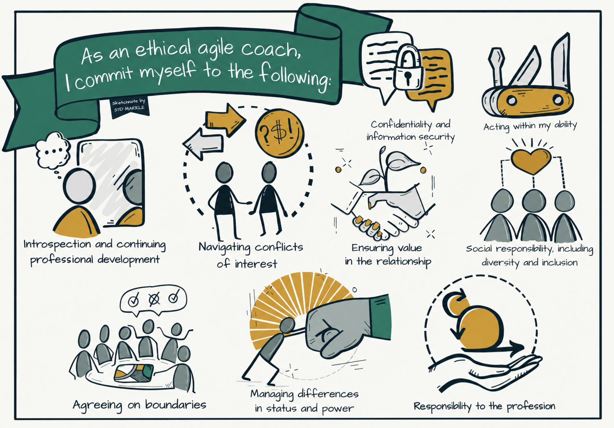

Here I describe my own stance on ethics in the coaching role, built on my own experience and inspired by, among others, the Agile Alliance, ICAgile and ICF ethical frameworks (see the sources in the knowledge bank).
Transparency is one of my most important principles, everyone should understand what's happening and why. This is especially true when I move between different roles, as a coach or as an advisor, then I'm clear about which role I'm in at that moment so expectations stay accurate.
Confidentiality also matters a great deal to me, I'm clear about what information I share and don't share. I never share information about individuals without their permission, the only exception being if it involves a legal violation or someone is at risk of harm. What I do pass on is patterns and observations at the team, group or organizational level, never tied to a specific person.
Diversity & inclusion is a strength I want to protect. Teams and organizations grow stronger from having people with different backgrounds, experiences and perspectives, which is why it's important to make sure everyone gets the chance to speak up, regardless of their current circumstances.
Respect is, for me, mostly about being able to have conflicts in a respectful way. We don't have to agree or share the same view on solutions, but we try together, respectfully, to find what's best for solving the problem.
Agile coaching rests on seeing the people I work with as whole, capable adults. Instead of asking what happened and why, I work with open questions like "What else?", "What's at risk?" and "If it were up to you, how would you want it?", and with goals and milestones that move toward what the person themselves wants to achieve. If a conversation moves into private matters or mental health, I refer onward to roles better equipped to help there.
I'm aware of my own limitations and what I'm responsible for within my role. If I lack the knowledge to lead or mentor someone in an area I haven't mastered myself, I'm open about it rather than pretending to know more than I do.
I'm open about any conflicts of interest, for example if I have a relationship with someone on the team or a personal stake in the outcome, rather than pretending to be neutral. If it comes up, I handle it together with the people involved, and step back if needed.
My goal is for the team to become self-sufficient, not to need me forever. I try to build up the team's own capability rather than becoming a permanent fixture: when the team doesn't want me but needs me, I have to stay, when the team wants me but doesn't need me, I have to leave.
I'm aware that the role of coach sometimes carries informal power, for example through proximity to leadership or visibility across several teams. I never use that position to my own advantage, and I stay attentive to how power differences can affect what people feel safe saying to me.

Content based on the Agile Alliance's Code of Ethical Conduct for Agile Coaching, original sketchnote by Syd Markle, recolored to my own palette, licensed under CC BY-SA 4.0.